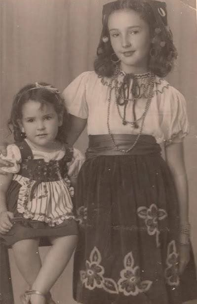

Hija y hermana
Valencia, la fe y la casa grande
1944 · 1962
Nació en Valencia el 2 de mayo de 1944, la menor de los seis hijos de Carlos Lizarraga Zuloaga y Magdalena Calzadilla. La bautizaron en la Catedral como Gloria María Auxiliadora. Sus hermanos fueron Carlos Eduardo, Manuel, Magaly, Jorge y Gustavo.
A los doce años fue con dos amigas a inscribirse en Copei. La edad mínima era catorce; insistió hasta que la aceptaron. A los quince ya era catequista. Terminó el bachillerato en el San José de Tarbes, en Caracas.